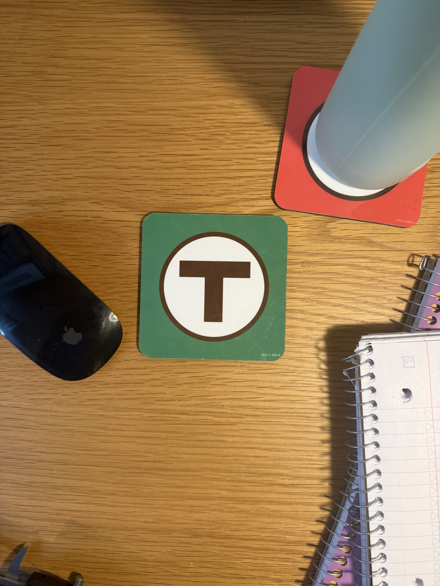
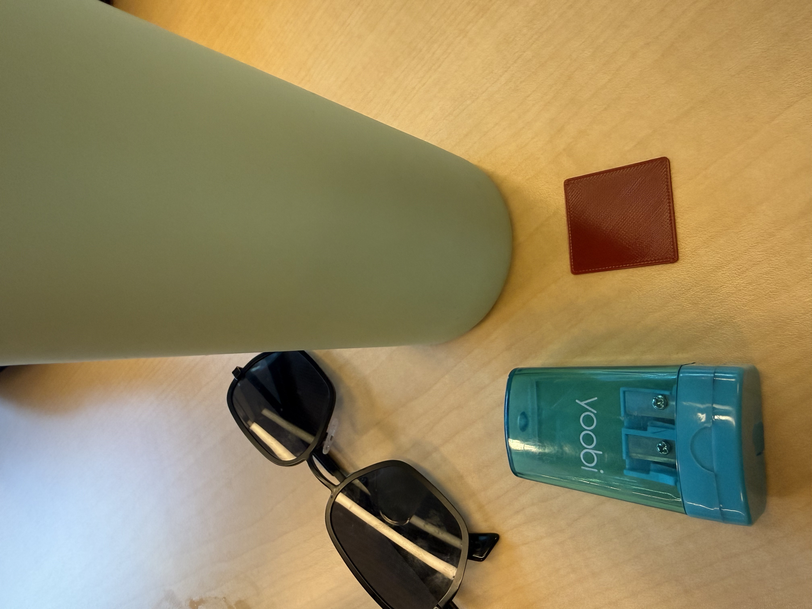
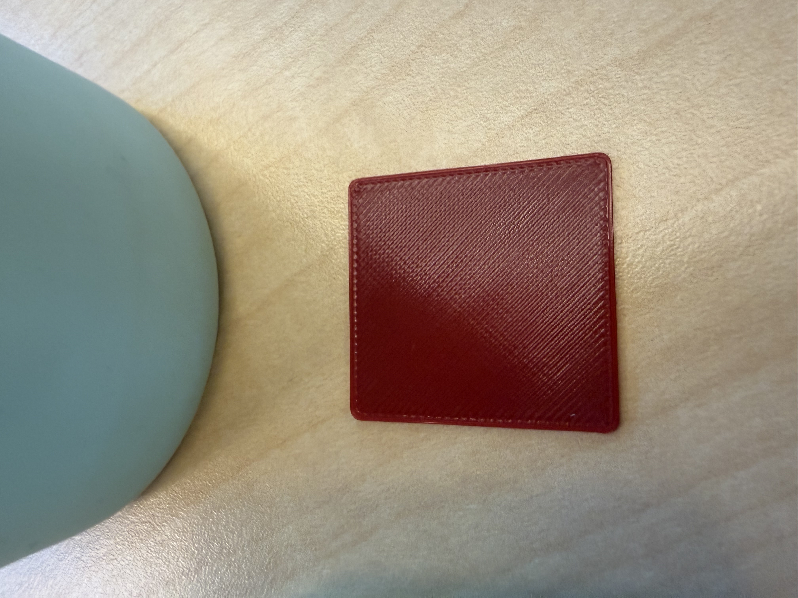
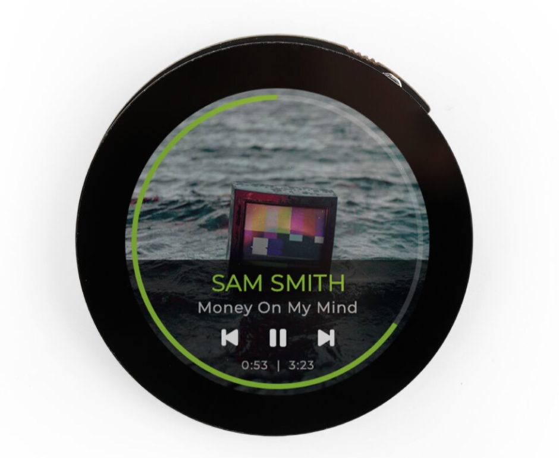
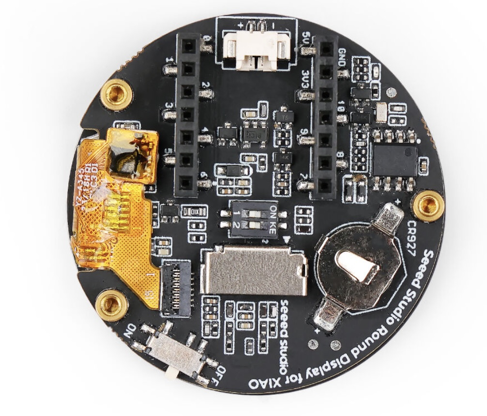
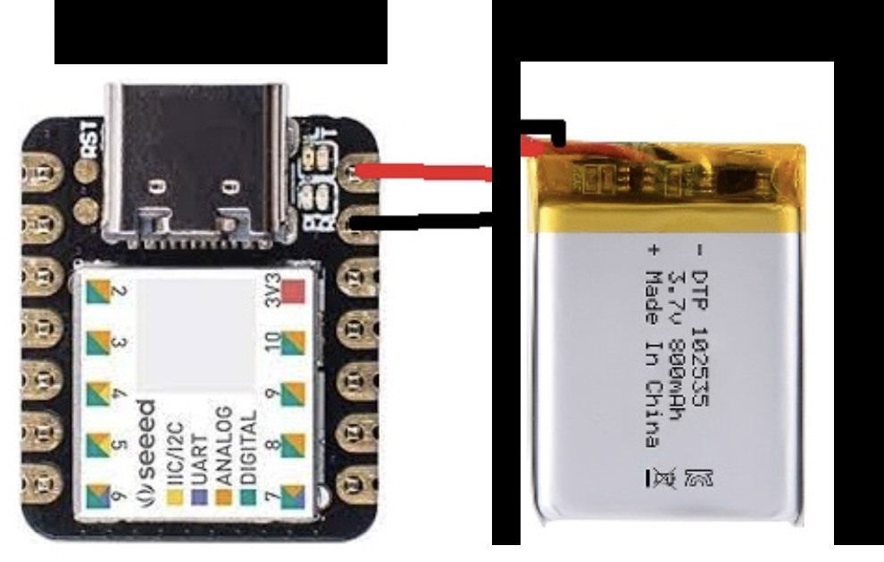
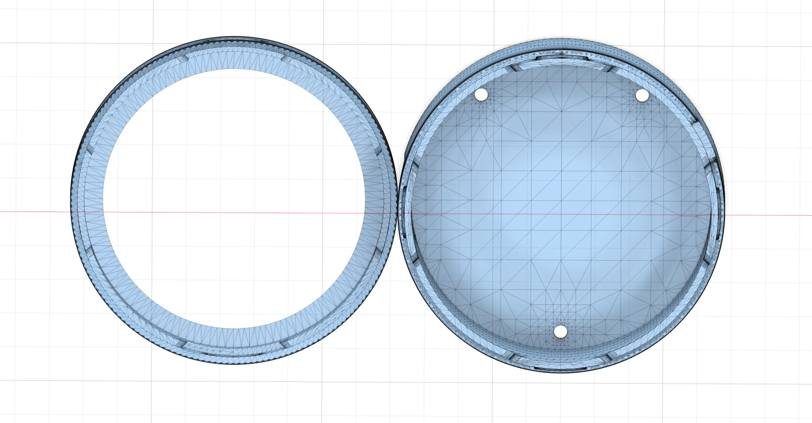
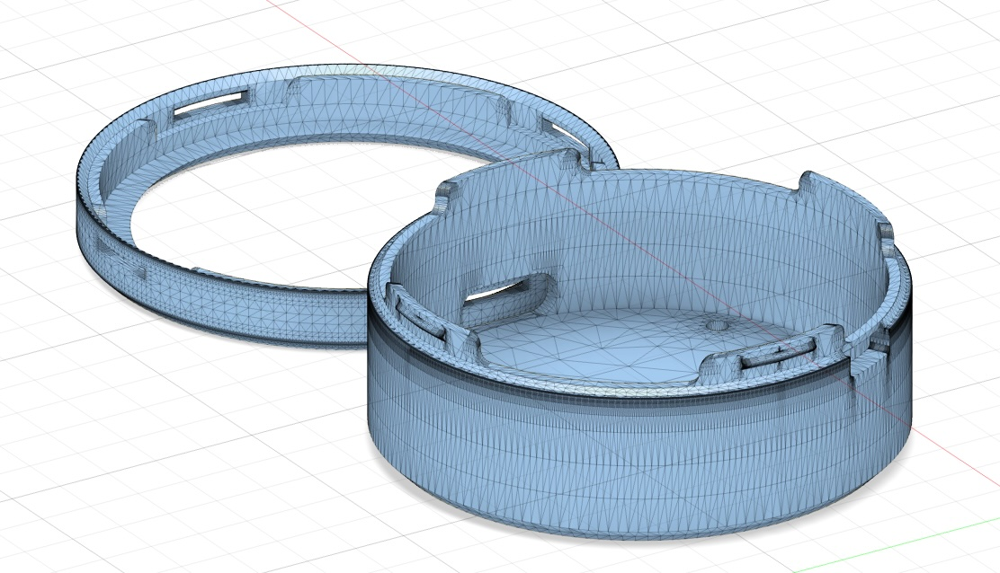

Week 5: 3D Printing
3D Printing
I decided to print the model of my MBTA coaster from week 2. After slicing it in Prusa, the estimated time to print (ETP) came out to 1 hour 45 minutes! So I scaled it down a bit until the ETP was 10 minutes on an MK3. Then I converted to MK4 format because MK3s weren't available, and ETP became 6 minutes.
Then I printed, and well, it's tiny. Check out the scale differences:




Insights
- Scaling something down in 3 dimensions seems more dramatic than 2 dimensions
- Scaling has side effects — we lost fidelity on the model.
- The T and circle engraving is actually using an offset, but after scaling down the model the offset is smaller than (or too close to) the diameter of the 3D printer's nozzle
- The effect is the T and circle are not visible on the 3D print
- Even simple things take a long time to print
- MK3 and MK4 formats or the machines themselves are different — all I did was change format and the ETP changed
Final Project Update
I'm committing to my first project Melodia, the physical tile-based music game, as my final project. But with a twist that folds in my Keystone idea too. By adding a gesture sensor, a single tile can double as a Keystone: pick it up and cast musical notes with it like a wand. I think an easy adapter is a necklace with a magnet on it that lets you wear a tile around your neck, then I get Keystone fro for free.


The week 4 prototype proved out connection sensing with hall effect sensors and magnets. The big change since then: switching to the Seeed 1.28" Round Touch Display for XIAO (see above). It eliminates the need for LEDs entirely, and brings a lot with it:
- Battery charging chip and charge status indicator
- Touch display — input without any buttons
- Backlight
- CR coin battery for a permanent clock (RTC)

Just showing this 800mAh battery for scale/fit — battery female end will be soldered to Seed Display battery management chip - has +/- battery surfaces..
With display, power, and input handled, the only custom electronics left to worry about is sensing — the hall sensors per side plus a two-pad contact sensor on top of each tile.
Technical Considerations
- Everything hangs off one I2C bus — the round display, the MCP23008 expander, and the gesture sensor need non-conflicting addresses (might be able to use a IMU instead)
- The bare A3144 hall sensors need pull-ups — the MCP23008's internal pull-ups resistors can handle without xtra resistors
- One 800 mAh LiPo has to power the display, the XIAO's radio, and all the sensors — battery life needs measuring with ESP-NOW active, could be 4-8hrs with some estimates
- There are really 3 questions tiles ask: who is N/E/S/W of me, is anyone above me (contact sensor), and where is everyone in the grid.
- Tiles talk over ESP-NOW, so note timing between tiles has to stay tight enough to feel musical. I've also solved the arrangement detection algorithm using hall sensors and timestamps/seq on placement.
- The hardest parts I think will be (1) figuring out how to mount/detect the tile sitting atop you, I'm hoping this two-pad contact sensor and bridge thing works. Will discuss with lab team. (2) fitting everything in this case.
- Just realized I don't have a buzzer included! Buzzer is monophonic but small, I can get 2 octaves but at different volumes. If sound is jenky might want to upgrade to an amp+speaker, but space! Need holes for sound emission in case? Polyphony ishandled by concurrent tiles. This should just be 'play at near future time' packet to everyone.
- The enclosure work is blocked on converting the
.stlmesh to Fusion bodies so I can extend the case with the side sensor and magnet interlock pockets on N/E/S/W sides
Rough Timeline
- Week 4 — (This week) Revise the BOM, solve sound output issue and space, design and print case with 8 magnets slots and 4 hall sensor side mounts (North, E, S, W). Order additional parts.
- Week 5 — Mount 3 Xiaos in X Seed Display into Case. Wire up halls for sensing. Test wireless arrangement sensing and simple 3 tile game. Document case issues.
- Week 6 — Build 9 tiles. Expand software for 3x3 grid. Solve the top two contact/conductive bridge (anyone on top of me?) sensing issue.
- Week 7 — More integration work, bug fixing, upgrades (buzzer sound ok or need amp+speaker?).
Bill of Materials
| Qty | Component | Notes |
|---|---|---|
| 1 | Seeed 1.28" Round Touch Display for XIAO | Main screen and touch input. 39 mm round 240×240 touch display with RTC, charge circuit, TF slot, and JST 1.25 battery connector. XIAO snaps right in. |
| 1 | Seeed XIAO ESP32 board | A wireless XIAO ESP32C3 for ESP-NOW between tiles. 2.4 GHz Wi-Fi and BLE. |
| 1 | MCP23008 I2C GPIO expander | 8 digital GPIO pins over I2C. Each pin can be input, output, or input with internal pull-up. |
| 4 | A3144 digital hall effect sensors | One per side: north/east/south/west. Bare A3144-style sensors need pull-ups — the MCP23008 internal pull-ups cover that. |
| 8 | 5×5 mm magnets | Two per side: one for snapping/alignment, one to trigger the neighboring tile's hall sensor. |
| 1 | Grove Smart IR Gesture Sensor (PAJ7660) | The wand input for Keystone mode. I2C, so it drops onto the same bus as the expander. |
| 1 | 800 mAh 3.7V LiPo battery | Needs a matching JST 1.25 mm 2-pin plug for the round display. |
| 1 | Two-pad top contact sensor | Fabricated from two exposed conductive pads on the top of the tile. Determines "is there a tile above me?" without having to use another magnet/hall. |
| 1 | Bottom conductive bridge | Copper tape, metalic (brass?) strip, plated pad (like PCB?) — basically some contact on the underside of each tile. Bridges the top contact pads of the tile below. |
| — | Wire / solder / maybe: custom PCB / other misc. stuff | For routing hall sensors, magnets, contact pads, I2C, and power. |
Enclosure for Melodia Tile


I found a case in .stl form for mounting the Seeed Round Display (download). My plan is to extend it with four side cases, each holding a hall-sensor and magnet pair — one for interlock, the other for triggering the neighboring tile's sensor.
I'm having trouble with the conversion of .stl mesh to bodies in Fusion right now — still working through it.
3D Scan of Francis Davis Millet
Francis Davis Millet (1846–1912) was an American painter and writer, Harvard class of 1869, who served as a drummer boy in the Civil War and directed the decorations for the 1893 World's Columbian Exposition in Chicago. He died aboard the Titanic — which makes his bust a fitting resident of Widener Library, itself built in memory of Harry Elkins Widener, another Titanic victim.
The bust sits on the top floor of Widener, just outside the reading room. I used photogrammetry for over 45 minutes to scan this thing several times, but only managed to capture some of his face. I'm not sure really sure what happened, I think it could have been lighting. But I have 2GB of photos of every angle of this guy.
Can explore the scan above (or download the .stl).